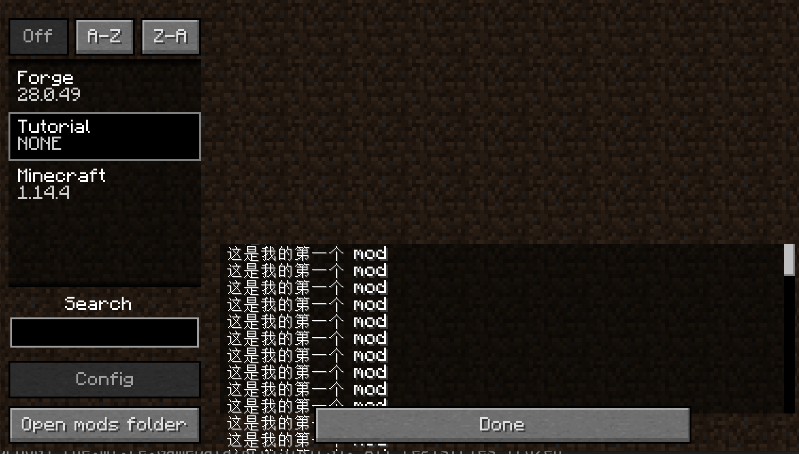

<!DOCTYPE HTML>
<html lang="" >
    <head>
        <meta charset="UTF-8">
        <meta content="text/html; charset=utf-8" http-equiv="Content-Type">
        <title>一个最简单的 Mod · GitBook</title>
        <meta http-equiv="X-UA-Compatible" content="IE=edge" />
        <meta name="description" content="">
        <meta name="generator" content="GitBook 3.2.3">
        
        
        
    
    <link rel="stylesheet" href="../gitbook/style.css">

    
            
                
                <link rel="stylesheet" href="../gitbook/gitbook-plugin-highlight/website.css">
                
            
                
                <link rel="stylesheet" href="../gitbook/gitbook-plugin-search/search.css">
                
            
                
                <link rel="stylesheet" href="../gitbook/gitbook-plugin-fontsettings/website.css">
                
            
        

    

    
        
    
        
    
        
    
        
    
        
    
        
    

        
    
    
    <meta name="HandheldFriendly" content="true"/>
    <meta name="viewport" content="width=device-width, initial-scale=1, user-scalable=no">
    <meta name="apple-mobile-web-app-capable" content="yes">
    <meta name="apple-mobile-web-app-status-bar-style" content="black">
    <link rel="apple-touch-icon-precomposed" sizes="152x152" href="../gitbook/images/apple-touch-icon-precomposed-152.png">
    <link rel="shortcut icon" href="../gitbook/images/favicon.ico" type="image/x-icon">

    
    <link rel="next" href="../chapter-2/" />
    
    
    <link rel="prev" href="1-1.html" />
    

    </head>
    <body>
        
<div class="book">
    <div class="book-summary">
        
            
<div id="book-search-input" role="search">
    <input type="text" placeholder="Type to search" />
</div>

            
                <nav role="navigation">
                


<ul class="summary">
    
    

    

    
        
        
    
        <li class="chapter " data-level="1.1" data-path="../">
            
                <a href="../">
            
                    
                    简介
            
                </a>
            

            
        </li>
    
        <li class="chapter " data-level="1.2" data-path="./">
            
                <a href="./">
            
                    
                    配置篇
            
                </a>
            

            
            <ul class="articles">
                
    
        <li class="chapter " data-level="1.2.1" data-path="1-1.html">
            
                <a href="1-1.html">
            
                    
                    环境配置
            
                </a>
            

            
        </li>
    
        <li class="chapter active" data-level="1.2.2" data-path="1-2.html">
            
                <a href="1-2.html">
            
                    
                    一个最简单的 Mod
            
                </a>
            

            
        </li>
    

            </ul>
            
        </li>
    
        <li class="chapter " data-level="1.3" data-path="../chapter-2/">
            
                <a href="../chapter-2/">
            
                    
                    物品开发篇
            
                </a>
            

            
            <ul class="articles">
                
    
        <li class="chapter " data-level="1.3.1" data-path="../chapter-2/2-1.html">
            
                <a href="../chapter-2/2-1.html">
            
                    
                    两个重要的概念
            
                </a>
            

            
        </li>
    
        <li class="chapter " data-level="1.3.2" data-path="../chapter-2/2-2.html">
            
                <a href="../chapter-2/2-2.html">
            
                    
                    第一个物品
            
                </a>
            

            
        </li>
    
        <li class="chapter " data-level="1.3.3" data-path="../chapter-2/2-3.html">
            
                <a href="../chapter-2/2-3.html">
            
                    
                    来点材质与模型
            
                </a>
            

            
        </li>
    
        <li class="chapter " data-level="1.3.4" data-path="../chapter-2/2-4.html">
            
                <a href="../chapter-2/2-4.html">
            
                    
                    埋个彩蛋
            
                </a>
            

            
        </li>
    

            </ul>
            
        </li>
    

    

    <li class="divider"></li>

    <li>
        <a href="https://www.gitbook.com" target="blank" class="gitbook-link">
            Published with GitBook
        </a>
    </li>
</ul>


                </nav>
            
        
    </div>

    <div class="book-body">
        
            <div class="body-inner">
                
                    

<div class="book-header" role="navigation">
    

    <!-- Title -->
    <h1>
        <i class="fa fa-circle-o-notch fa-spin"></i>
        <a href=".." >一个最简单的 Mod</a>
    </h1>
</div>


                    <div class="page-wrapper" tabindex="-1" role="main">
                        <div class="page-inner">
                            
<div id="book-search-results">
    <div class="search-noresults">
    
                                <section class="normal markdown-section">
                                
                                <p>&#x63A5;&#x4E0B;&#x6765;&#x6211;&#x4EEC;&#x5C06;&#x6784;&#x5EFA;&#x4E00;&#x4E2A;&#x6700;&#x5C0F;&#x5316;&#x7684; mod &#x3002;
&#x9996;&#x5148;&#x6211;&#x4EEC;&#x9700;&#x8981;&#x4FEE;&#x6539; <code>build.gradle</code> &#x6587;&#x4EF6;&#xFF0C;<code>build.gradle</code> &#x6587;&#x4EF6;&#x51B3;&#x5B9A;&#x4E86;&#x8FD9;&#x4E2A;&#x9879;&#x76EE;&#x5982;&#x4F55;&#x5904;&#x7406;&#x4F9D;&#x8D56;&#xFF0C;&#x5982;&#x4F55;&#x6784;&#x5EFA;&#x7ED3;&#x679C;&#x3002;</p>
<p>&#x4EE5;&#x4E0B;&#x662F;&#x4FEE;&#x6539;&#x5B8C;&#x6BD5;&#x7684;&#x7ED3;&#x679C;</p>
<pre><code class="lang-Groovy">...&#x90E8;&#x5206;&#x6458;&#x5F55;
version = <span class="hljs-string">&apos;0.0.1&apos;</span>
group = <span class="hljs-string">&apos;com.otakusaikou.tutorial&apos;</span> 
archivesBaseName = <span class="hljs-string">&apos;Tutorial&apos;</span>
...
</code></pre>
<p><code>version</code>  &#x914D;&#x7F6E;&#x9879;&#x8BF7;&#x6309;&#x7167;<a href="https://semver.org/lang/zh-CN/" target="_blank">&#x8BED;&#x4E49;&#x5316;&#x7248;&#x672C;&#x53F7;</a>&#x8FDB;&#x884C;&#x586B;&#x5199;&#xFF0C;&#x8FD9;&#x91CC;&#x6211;&#x4EEC;&#x53EA;&#x662F;&#x4F5C;&#x4E3A;&#x6559;&#x5B66;&#x4E0E;&#x5B9E;&#x9A8C;&#x7528;&#x9014;&#xFF0C;&#x6240;&#x4EE5;&#x586B;&#x5199;&#x4E3A;<code>0.0.1</code>&#x3002;</p>
<p><code>group</code> &#x914D;&#x7F6E;&#x9009;&#x9879;&#x7684;&#x89C4;&#x5219;&#x662F;&#x4F60;&#x7684;&#x57DF;&#x540D;&#x53CD;&#x5199;+&#x4F60;&#x7684; <code>modid</code>, <code>modid</code> &#x4E00;&#x822C;&#x4E3A;&#x4F60;mod&#x540D;&#x79F0;&#x7684;&#x5C0F;&#x5199;&#xFF0C;&#x8BF7;&#x6CE8;&#x610F;&#x8FD9;&#x91CC;&#x4E0D;&#x8981;&#x51FA;&#x73B0;&#x7279;&#x6B8A;&#x7B26;&#x53F7;&#x3002;</p>
<p><code>archivesBaseName</code> &#x5219;&#x51B3;&#x5B9A;&#x4E86;&#x6253;&#x5305;&#x6210; jar &#x7684;&#x6587;&#x4EF6;&#x540D;&#x79F0;&#xFF0C;&#x8FD9;&#x91CC;&#x4F60;&#x53EF;&#x4EE5;&#x586B;&#x5199;&#x4F60;&#x559C;&#x6B22;&#x7684;&#x540D;&#x79F0;&#x3002;&#x4EE5;&#x6211;&#x8FD9;&#x4E2A;&#x5199;&#x6CD5;&#x4E3E;&#x4F8B;&#xFF0C;&#x6253;&#x5305;&#x6210; jar &#x6587;&#x4EF6;&#x7684;&#x540D;&#x79F0;&#x5C06;&#x4E3A;  <code>Tutorial-0.0.1.jar</code>&#x3002;</p>
<p>&#x63A5;&#x4E0B;&#x6765;&#x6211;&#x4EEC;&#x4FEE;&#x6539; <code>src/main/resources/META-INF/mods.toml</code> &#x6587;&#x4EF6;</p>
<pre><code class="lang-toml"><span class="hljs-attr">modLoader</span>=<span class="hljs-string">&quot;javafml&quot;</span>
<span class="hljs-attr">loaderVersion</span>=<span class="hljs-string">&quot;[28,)&quot;</span>
<span class="hljs-section">[[mods]]</span>
<span class="hljs-attr">modId</span>=<span class="hljs-string">&quot;tutorial&quot;</span> 
<span class="hljs-attr">version</span>=<span class="hljs-string">&quot;${file.jarVersion}&quot;</span> 
<span class="hljs-attr">displayName</span>=<span class="hljs-string">&quot;Tutorial&quot;</span> 
<span class="hljs-attr">description</span>=<span class="hljs-string">&apos;&apos;&apos;
&#x8FD9;&#x662F;&#x6211;&#x7684;&#x7B2C;&#x4E00;&#x4E2A; mod
&apos;&apos;&apos;</span>
</code></pre>
<p>&#x4EE5;&#x4E0A;&#x4E3A;&#x4E00;&#x4E2A;&#x6700;&#x7B80;&#x5355;&#x7684; <code>mods.toml</code>&#xFF0C;&#x4F60;&#x53EF;&#x4EE5;&#x9009;&#x62E9;&#x5C06;&#x539F;&#x7248;&#x7684; <code>mods.toml</code> &#x66FF;&#x6362;&#x4E3A;&#x4EE5;&#x4E0A;&#x7684;&#x5185;&#x5BB9;&#x518D;&#x8FDB;&#x884C;&#x8FDB;&#x4E00;&#x6B65;&#x7684;&#x4FEE;&#x6539;&#xFF0C;&#x4E5F;&#x53EF;&#x4EE5;&#x5728;&#x539F;&#x7248;&#x7684;&#x57FA;&#x7840;&#x4E0A;&#x8FDB;&#x884C;&#x4FEE;&#x6539;&#x3002;</p>
<p>&#x4F46;&#x6211;&#x5E0C;&#x671B;&#x7ED9;&#x5927;&#x5BB6;&#x4E00;&#x4E2A;&#x6700;&#x5C0F;&#x53EF;&#x53CD;&#x9988;&#x5355;&#x5143;&#xFF0C;&#x6240;&#x4EE5;&#x6211;&#x7684;&#x5EFA;&#x8BAE;&#x662F;&#x7528;&#x4EE5;&#x4E0A;&#x7684;&#x5185;&#x5BB9;&#x66FF;&#x6362;&#x539F;&#x7248;&#x518D;&#x8FDB;&#x884C;&#x4FEE;&#x6539;&#xFF0C;&#x5982;&#x679C;&#x4E4B;&#x540E;&#x6709;&#x5FC5;&#x8981;&#x7528;&#x5230;&#x66F4;&#x8BE6;&#x7EC6;&#x7684;&#x914D;&#x7F6E;&#xFF0C;&#x518D;&#x6765;&#x7814;&#x7A76;&#x539F;&#x7248;&#x5185;&#x5BB9;&#x4E5F;&#x4E0D;&#x8FDF;&#x3002;</p>
<p>&#x4EE5;&#x4E0A;&#x7684;&#x5185;&#x5BB9;&#x4F60;&#x9700;&#x8981;&#x4FEE;&#x6539;&#x4E09;&#x4E2A;&#x5730;&#x65B9;&#xFF0C;&#x5206;&#x522B;&#x662F; <code>modId</code>&#xFF0C;<code>displayName</code>&#xFF0C;<code>description</code>&#x3002;</p>
<p><code>modId</code> &#x6240;&#x8981;&#x586B;&#x5199;&#x4F46;&#x5185;&#x5BB9;&#x548C;&#x524D;&#x9762; <code>build.gradle</code> &#x662F;&#x4E00;&#x6837;&#x7684;&#x3002;</p>
<p><code>displayName</code> &#x7684;&#x5185;&#x5BB9;&#x662F;&#x662F;&#x5728;&#x6E38;&#x620F;&#x4E2D; mods &#x754C;&#x9762;&#x663E;&#x793A;&#x7684; mod &#x540D;&#x79F0;&#xFF0C;&#x586B;&#x5199;&#x4F60; mod &#x7684;&#x540D;&#x79F0;&#x5C31;&#x884C;&#x3002;</p>
<p><code>description</code> &#x7684;&#x5185;&#x5BB9;&#x5219;&#x662F;&#x6E38;&#x620F;&#x4E2D; mods &#x754C;&#x9762;&#x663E;&#x793A;&#x7684; mod &#x7684;&#x7B80;&#x4ECB;&#xFF0C;&#x4F60;&#x6309;&#x9700;&#x586B;&#x5199;&#x5C31;&#x884C;&#x3002;&#xFF08;&#x8FD9;&#x91CC;&#x76EE;&#x524D;&#x7248;&#x672C;&#x7684; forge &#x6709;&#x4E2A;&#x663E;&#x793A; bug&#xFF0C;&#x53EA;&#x80FD;&#x663E;&#x793A;&#x7B80;&#x4ECB;&#x9760;&#x540E;&#x7684;&#x5185;&#x5BB9;&#x8BF7;&#x6CE8;&#x610F;&#xFF09;</p>
<p>&#x53E6;&#x5916; <code>version</code> &#x9009;&#x9879; <code>${file.jarVersion}</code> &#x7684;&#x610F;&#x601D;&#x662F;&#xFF0C;&#x6839;&#x636E; jar &#x6587;&#x4EF6;&#x6765;&#x51B3;&#x5B9A;&#x7248;&#x672C;&#x53F7;&#xFF0C;&#x800C;&#x5F00;&#x53D1;&#x73AF;&#x5883;&#x4E0D;&#x4F1A;&#x7F16;&#x8BD1;&#x51FA; jar &#x6587;&#x4EF6;&#xFF0C;&#x7248;&#x672C;&#x53F7;&#x4F1A;&#x663E;&#x793A;&#x4E3A; <code>NONE</code> &#x8BF7;&#x4E0D;&#x7528;&#x5728;&#x610F;&#x3002;</p>
<p>&#x63A5;&#x4E0B;&#x6765;&#x8BF7;&#x5220;&#x9664;&#xFF0C;<code>src/main/java/</code> &#x6587;&#x4EF6;&#x4E0B;&#x7684;&#x6240;&#x6709;&#x6587;&#x4EF6;&#x5939;&#xFF0C;&#x65B0;&#x5EFA;&#x4E00;&#x4E2A;&#x548C; <code>build.gradle</code> &#x4E2D; <code>group</code> &#x9009;&#x9879;&#x76F8;&#x540C;&#x7684;&#x5305;&#xFF0C;&#x5E76;&#x521B;&#x5EFA; <code>Main.java</code>&#x3002;</p>
<p>&#x5B8C;&#x6210;&#x540E;&#x76EE;&#x5F55;&#x6811;&#x5982;&#x4E0B;:</p>
<pre><code>...&#x7701;&#x7565;
&#x2500;&#x2500;&#x2500; src
    &#x2514;&#x2500;&#x2500; main
        &#x251C;&#x2500;&#x2500; java
        &#x2502;   &#x2514;&#x2500;&#x2500; com
        &#x2502;       &#x2514;&#x2500;&#x2500; otakusaikou
        &#x2502;           &#x2514;&#x2500;&#x2500; tutorial
        &#x2502;               &#x2514;&#x2500;&#x2500; Main.java
        &#x2514;&#x2500;&#x2500; resources
            &#x251C;&#x2500;&#x2500; META-INF
            &#x2502;   &#x2514;&#x2500;&#x2500; mods.toml
            &#x2514;&#x2500;&#x2500; pack.mcmeta
</code></pre><p><code>Main.java</code> &#x6587;&#x4EF6;&#x5185;&#x5BB9;&#x5982;&#x4E0B;</p>
<pre><code class="lang-java"><span class="hljs-keyword">package</span> com.otakusaikou.tutorial;

<span class="hljs-keyword">import</span> net.minecraftforge.fml.common.Mod;

<span class="hljs-meta">@Mod</span>(<span class="hljs-string">&quot;tutorial&quot;</span>)
<span class="hljs-keyword">public</span> <span class="hljs-class"><span class="hljs-keyword">class</span> <span class="hljs-title">Main</span> </span>{
}
</code></pre>
<p>&#x5176;&#x4E2D;&#x7684;&#x5173;&#x952E;&#x70B9;&#x4E3A; <code>@Mod(&quot;tutorial&quot;)</code> &#x8FD9;&#x4E2A;&#x6CE8;&#x91CA;&#xFF0C;&#x8FD9;&#x4E2A;&#x6CE8;&#x91CA;&#x8868;&#x660E;&#x4E86; mod &#x7684;&#x4E3B;&#x7C7B;&#x4E3A;&#x54EA;&#x4E00;&#x4E2A;&#xFF0C;&#x800C;&#x9700;&#x8981;&#x4F20;&#x5165;&#x7684;&#x53C2;&#x6570;&#x5219;&#x662F;&#x8BE5; mod &#x7684; modid&#xFF0C;&#x6CE8;&#x610F;&#x8FD9;&#x91CC;&#x7684; modid &#x5FC5;&#x987B;&#x548C; <code>mods.toml</code> &#x4E2D;&#x7684; <code>modId</code> &#x4E00;&#x6837;&#x3002;</p>
<p>&#x5B8C;&#x6210;&#x4EE5;&#x4E0A;&#x6B65;&#x9AA4;&#x4E4B;&#x540E;&#xFF0C;&#x8FD0;&#x884C;&#x5BA2;&#x6237;&#x7AEF;&#x5373;&#x53EF;&#x770B;&#x5230;&#x4E00;&#x4E2A;&#x6700;&#x7B80;&#x5355;&#x7684; mod &#x4E86;&#x3002;</p>
<p></p>

                                
                                </section>
                            
    </div>
    <div class="search-results">
        <div class="has-results">
            
            <h1 class="search-results-title"><span class='search-results-count'></span> results matching "<span class='search-query'></span>"</h1>
            <ul class="search-results-list"></ul>
            
        </div>
        <div class="no-results">
            
            <h1 class="search-results-title">No results matching "<span class='search-query'></span>"</h1>
            
        </div>
    </div>
</div>

                        </div>
                    </div>
                
            </div>

            
                
                <a href="1-1.html" class="navigation navigation-prev " aria-label="Previous page: 环境配置">
                    <i class="fa fa-angle-left"></i>
                </a>
                
                
                <a href="../chapter-2/" class="navigation navigation-next " aria-label="Next page: 物品开发篇">
                    <i class="fa fa-angle-right"></i>
                </a>
                
            
        
    </div>

    <script>
        var gitbook = gitbook || [];
        gitbook.push(function() {
            gitbook.page.hasChanged({"page":{"title":"一个最简单的 Mod","level":"1.2.2","depth":2,"next":{"title":"物品开发篇","level":"1.3","depth":1,"path":"chapter-2/README.md","ref":"chapter-2/README.md","articles":[{"title":"两个重要的概念","level":"1.3.1","depth":2,"path":"chapter-2/2-1.md","ref":"chapter-2/2-1.md","articles":[]},{"title":"第一个物品","level":"1.3.2","depth":2,"path":"chapter-2/2-2.md","ref":"chapter-2/2-2.md","articles":[]},{"title":"来点材质与模型","level":"1.3.3","depth":2,"path":"chapter-2/2-3.md","ref":"chapter-2/2-3.md","articles":[]},{"title":"埋个彩蛋","level":"1.3.4","depth":2,"path":"chapter-2/2-4.md","ref":"chapter-2/2-4.md","articles":[]}]},"previous":{"title":"环境配置","level":"1.2.1","depth":2,"path":"chapter-1/1-1.md","ref":"chapter-1/1-1.md","articles":[]},"dir":"ltr"},"config":{"gitbook":"*","theme":"default","variables":{},"plugins":[],"pluginsConfig":{"highlight":{},"search":{},"lunr":{"maxIndexSize":1000000,"ignoreSpecialCharacters":false},"sharing":{"facebook":true,"twitter":true,"google":false,"weibo":false,"instapaper":false,"vk":false,"all":["facebook","google","twitter","weibo","instapaper"]},"fontsettings":{"theme":"white","family":"sans","size":2},"theme-default":{"styles":{"website":"styles/website.css","pdf":"styles/pdf.css","epub":"styles/epub.css","mobi":"styles/mobi.css","ebook":"styles/ebook.css","print":"styles/print.css"},"showLevel":false}},"structure":{"langs":"LANGS.md","readme":"README.md","glossary":"GLOSSARY.md","summary":"SUMMARY.md"},"pdf":{"pageNumbers":true,"fontSize":12,"fontFamily":"Arial","paperSize":"a4","chapterMark":"pagebreak","pageBreaksBefore":"/","margin":{"right":62,"left":62,"top":56,"bottom":56}},"styles":{"website":"styles/website.css","pdf":"styles/pdf.css","epub":"styles/epub.css","mobi":"styles/mobi.css","ebook":"styles/ebook.css","print":"styles/print.css"}},"file":{"path":"chapter-1/1-2.md","mtime":"2019-08-22T09:54:42.227Z","type":"markdown"},"gitbook":{"version":"3.2.3","time":"2019-08-22T09:54:49.895Z"},"basePath":"..","book":{"language":""}});
        });
    </script>
</div>

        
    <script src="../gitbook/gitbook.js"></script>
    <script src="../gitbook/theme.js"></script>
    
        
        <script src="../gitbook/gitbook-plugin-search/search-engine.js"></script>
        
    
        
        <script src="../gitbook/gitbook-plugin-search/search.js"></script>
        
    
        
        <script src="../gitbook/gitbook-plugin-lunr/lunr.min.js"></script>
        
    
        
        <script src="../gitbook/gitbook-plugin-lunr/search-lunr.js"></script>
        
    
        
        <script src="../gitbook/gitbook-plugin-sharing/buttons.js"></script>
        
    
        
        <script src="../gitbook/gitbook-plugin-fontsettings/fontsettings.js"></script>
        
    

    </body>
</html>

